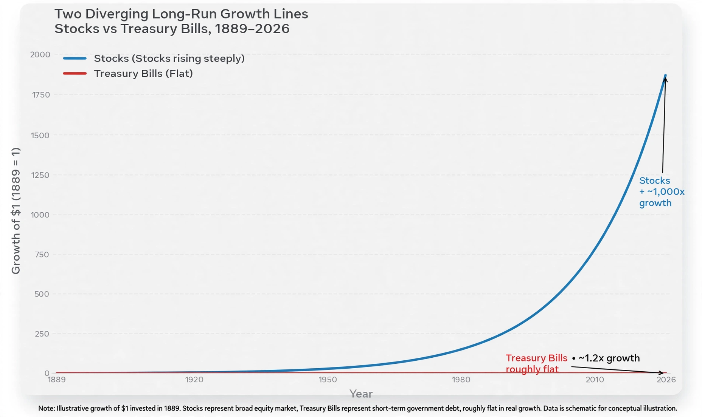

The equity premium puzzle refers to the inability of the standard neoclassical model of consumption-based asset pricing to explain the historically large difference between the average return on stocks and the return on risk-free government securities. The puzzle was named by Rajnish Mehra and Edward C. Prescott in a 1985 paper, building on data assembled by Mehra in his 1979 dissertation.
For the period 1889–1978 in the United States, the average real annual return on a broad index of stocks was about 7%, while the real return on short-term riskless Treasury bills was about 1%, giving an equity premium of roughly 6 percentage points. In the standard model with a representative agent having constant relative risk aversion, such a large premium requires an implausibly high coefficient of risk aversion (on the order of 30–50) — or, equivalently, agents would have to be so risk-averse that they would reject extremely favourable gambles. With empirically plausible risk aversion (around 1–10), the model predicts a premium of well under 1% given the smoothness of aggregate consumption growth.
The equity premium puzzle is closely linked to the risk-free rate puzzle (Weil, 1989): to reconcile the low observed risk-free rate with the model, agents must have a very low (even negative) rate of time preference, which conflicts with the high risk aversion needed for the premium.
Mehra and Prescott maintained in later work that the premium remained puzzling relative to the standard model, and the puzzle continues to motivate research in macro-finance.
Categories: Financial economics | Puzzles | Asset pricing